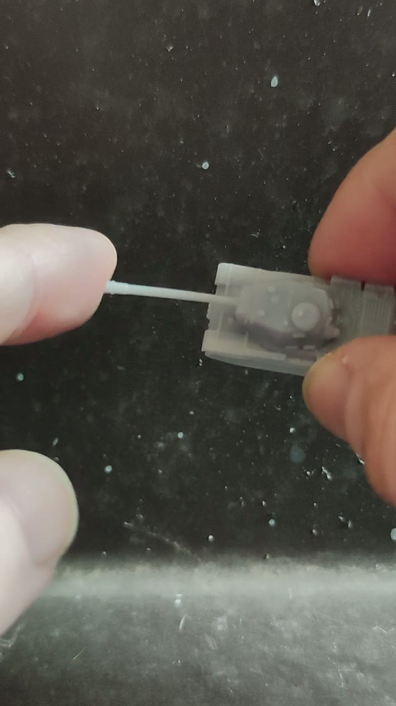
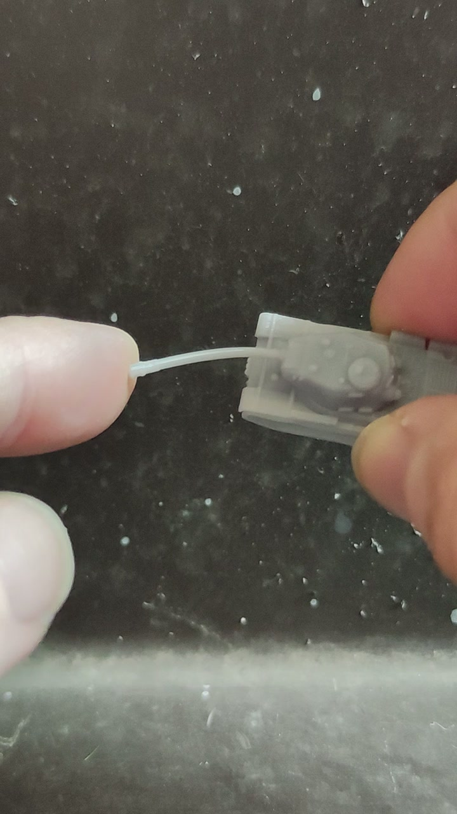

Material and durability
Detailed, not delicate
MiniTankForge models use a custom tougher resin blend chosen to reduce brittleness and give vulnerable parts, such as long barrels, a little flex. They are made for normal tabletop handling, storage, and transport—not just display.
Real model, real test
What the video shows
The same miniature is dropped onto a laminate floor, picked up, and checked immediately. Its long barrel is then flexed gently and returns to position.
- An accidental fall does not automatically mean a broken model.
- Long, vulnerable parts have a little give instead of behaving like brittle glass.
- The low weight of these miniatures reduces the force of ordinary knocks and falls.
- The resin blend is chosen to balance fine printed detail with practical tabletop use.
An honest limitation: these are still detailed miniatures, not indestructible toys. A hard enough impact, crushing, deliberate bending, or careless storage can damage fine parts. The video demonstrates the actual model and conditions shown; it does not guarantee that every fall will be harmless.
The proof up close
Unfiltered frames from the barrel-flex test. No added contrast, colour grading, sharpening, or stabilisation.

The barrel in its normal position before the flex test.

The long barrel visibly flexes under gentle pressure.
Ready to browse?
See the full tank range
Browse the catalogue here, then contact me directly or continue to Etsy when you know what you want.